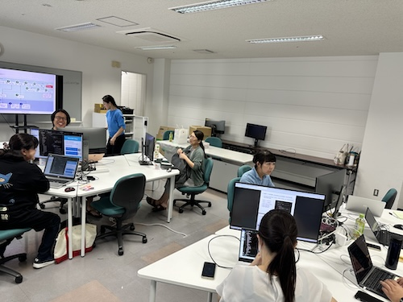
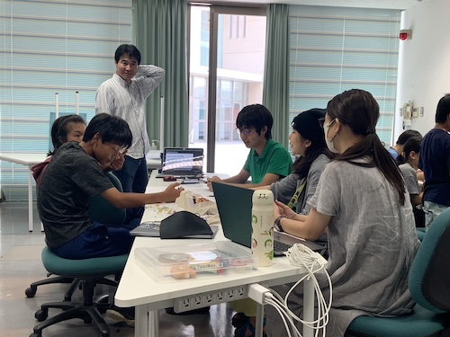

今日もCodingLabとMinecraftカップ - 2024/05/12 晴れ
午前中はCodingLabでGitHubを使うワーク、午後はMinecraftカップ参加者向けの企画ミーティング。
CodingLabでGitHub
先週に引き続き実施したGitHubを使った日記発信ワーク。リモートとローカルにあるリポジトリの考え方、同期や競合が発生する仕組みと対応方法を再確認した後に改めて日記ワークを実施しました。
ほとんどの方が日記配信と競合解決をできていたので、次回あたりから次のステップに進めそうです。
日々の日記ワークを通していくことで、利用ツールの操作も繰り返し確認することになり、理解も定着化していくと思います。繰り返した分だけ理解が進むのでぜひ継続してほしいなと思っています。

Minecraftカップ2024企画ミーティング
中学生チーム、小学生チームが参加し、仮想世界で表現するWell-beingな世界を設計してみました。
はじめにきれいなコンセプトができて、そこから設計できるとよいのですが、こうした経験がない子どもたちには難しいので、まずは身近なことをテーマに思いついたアイデアを形にしてみて、実際のアウトプットを見ながら発想を広げていった方がいいものができると感じています。
チームごとに紙に実現する世界を描いてみて、それをMinecraftで建築してみる、ということを行いました。

